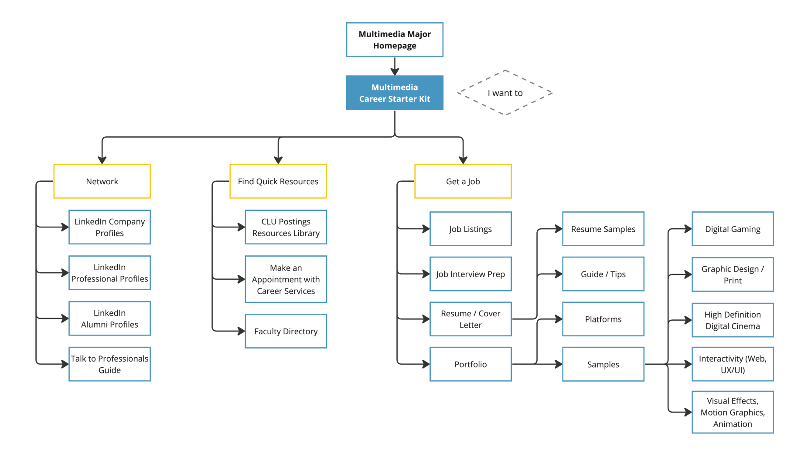
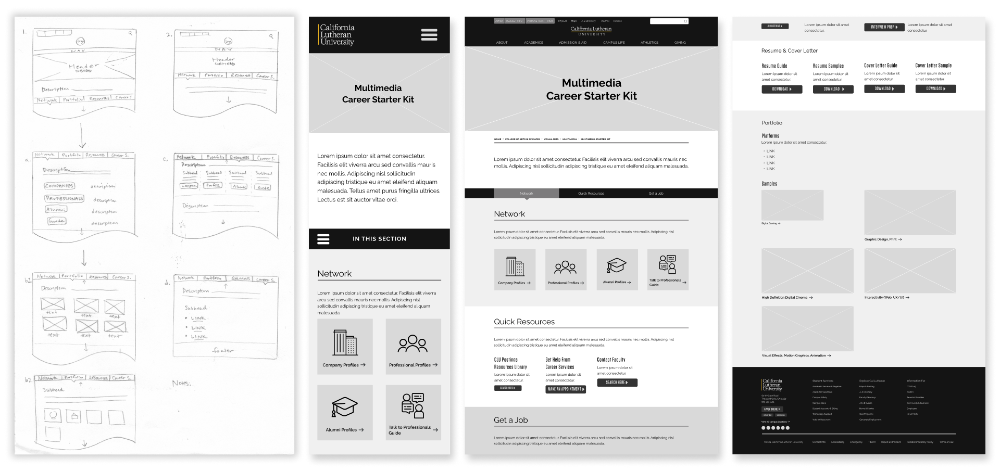
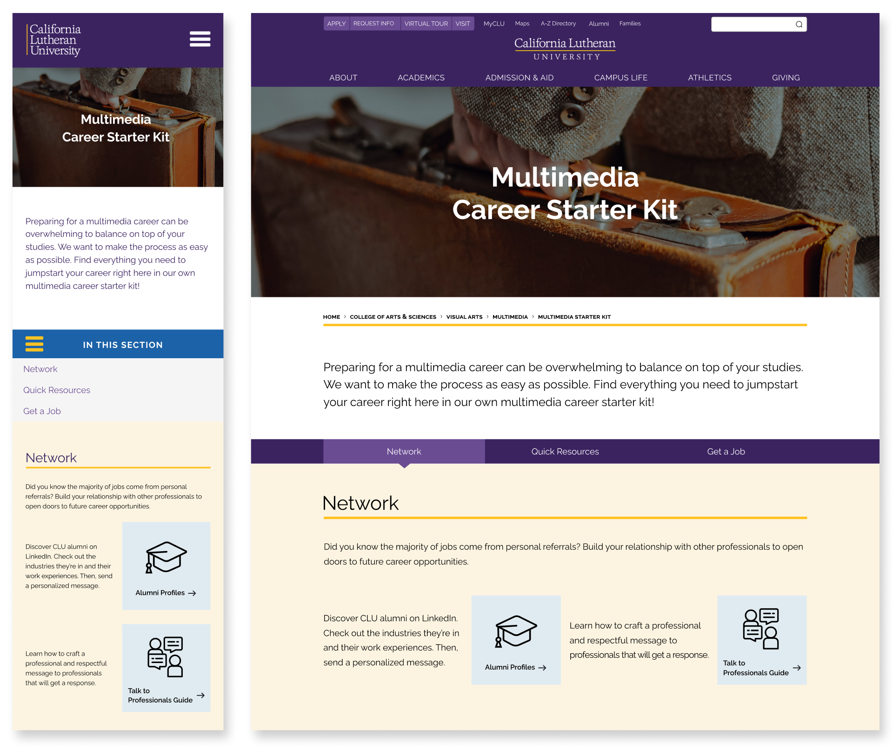

Multimedia Career Starter Kit
UX Research and UI Design Case Study
Quick access webpage to promote proactive career preparation at the CLU Multimedia Department
Problem Statement
There is a growing concern at Cal Lutheran University of whether their multimedia students are connected to all the resources they need to succeed in their careers once they graduate.
Background
Hypothesis
An online platform that makes career resources easily accessible for multimedia students, hence encouraging students to become involved in career preparation earlier on in their college education.
The Why
The career development process for multimedia students at Cal Lutheran University can be especially challenging because multimedia is a wide and constantly evolving career field, with each niche area requiring a very specific set of skills, portfolios, and work experiences. Hence, a big challenge for the school is making sure their multimedia graduates are fully equipped and prepared to meet current employee expectations to succeed in the real world.
In particular, an important question that arose was, “Do they have access to all the resources they need to successfully jump start their career?”
Research
Research Methodology
QUALITATIVE, ATTITUDINAL
User Interviews
Affinity Mapping
Card Sorting
User Journey Maps
I interviewed 10 individuals at CLU: 5 multimedia students, 3 multimedia professors, and 2 career counselors to identify career resources at school and what steps students take towards their career.
I asked questions about:
- Student's career decisions
- Career resources at CLU
- Where students look for advice
- Students' and employers' job expectations
- Career concerns
Developed Personas From Research Data
Jason
Occupation: Multimedia major, freshman at CLU
Jason became interested in multimedia through a high school program that exposed him to the creative fields. He is now taking multimedia classes at CLU and discovering various career paths.
Vanessa
Occupation: Multimedia major, junior at CLU
Vanessa always wanted to pursue art as a career, and she found that through multimedia. Now she has decided to pursue graphic design as her focus as she approaches her final year at school.
Frances
Occupation: Multimedia professor at CLU
Frances has been a faculty professor at CLU for 15 years and has many years of experience working professionally in the multimedia industry. Outside of teaching, she continues to work as a freelancer.
Devon
Occupation: Career Counselor at CLU
Devon has been working in CLU's Career Services for the past few years, with a history of expertise in providing career guidance to students and graduates from various colleges.
Insights
Students were aware of Career Services, but were not actively using it
Students were most interested in talking to current professionals
Students lacked knowledge of the real and specific career expectations
A need for early involvement in career preparations (portfolios & resume)
A disconnection studied between student intent and student behavior
User Journey Map
Through my findings, I identified the main user needs, and built various user journeys based on each: searching for career advice, getting a portfolio review, finding an internship.
Observed Pain Points
TOO MANY TOUCH POINTS FOR STUDENTS
Whether it is scavenging the school website for its resources or other online platforms advertising endless options, the current career development process results in too many open tabs and too much mental load for the student.
MAKING AND MAINTAINING CONNECTION
Students lacked proficiency in professional speech, and it led to valid concerns regarding professionals' responsiveness and inclinations to stay connected.
Research Summary
While many career resources are available to multimedia students at CLU, they still struggle to achieve career readiness. Research shows that the increased mental burden in navigating the multitude of steps and facets involved in career development can be a deterrence. Hence, the process needs to be simplified for students.
Concept
An straightforward, online career starter kit on the CLU website that contains all the resources multimedia majors need to jumpstart their career development.
With all resources in one space, it significantly reduces the number of touch points and mental load needed for students to take their necessary career building steps.
The online starter kit will contain:
- Networking: direct links to alumni, guide on how to connect to them professionally
- Quick access to school's career resources: career resource library, appointment button, faculty contacts
- Everything needed to apply for jobs: job listings, interview prep, resume & cover letter guides and samples, great portfolio samples for niche creative fields
Sitemap
Sketches and Wireframes
Final Design
Prototype
Interact with the prototypes below!
Mobile
Desktop
Future Roadmap
Usability Testing
With the launching of the webpage, I plan to promote and test with multimedia department faculty and students. Test efficiency and accessibility.
Conduct a Survey
Attitudinal vs behavioral research will be conducted regarding the disconnect between students' intent and actions.
Long Term Metrics
Tracking traffic to the landing page, the click rates, and the efficiency of the design and product (linked resources).